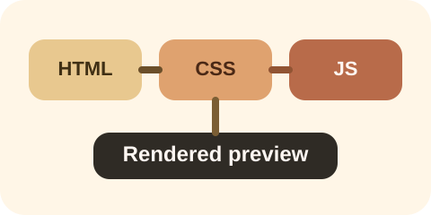

CSS proof
Warm cards and rounded image framing should be visible.
This page is meant to prove that local CSS, SVG images, and JavaScript all survive the inline preview.

CSS proof
Warm cards and rounded image framing should be visible.
JavaScript proof
Waiting for local JavaScript...
Load stamp
Server-side HTML only
Think of this page like a calm test card. If it looks polished and the text says that JavaScript loaded, the preview is reading nearby assets correctly.